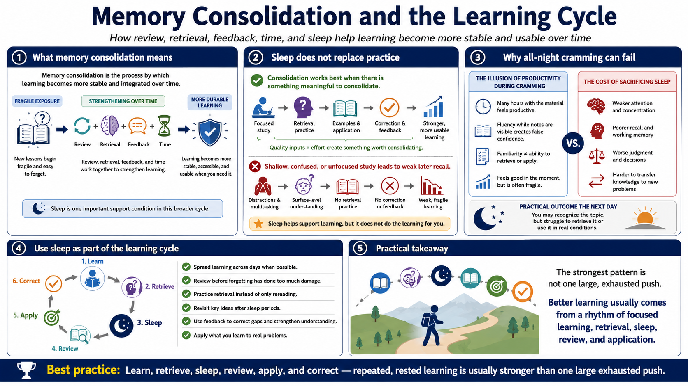

Sleep and Memory Consolidation
Connecting to LMS... Progress: in progress

Narration
Memory consolidation is the process, described here at a practical high level, by which learning can become more stable and integrated over time. A new lesson or practice attempt may begin as fragile exposure. Through review, retrieval, feedback, and time, it can become more durable. Sleep is one support condition in that broader cycle.
This does not mean a learner can skip practice and expect sleep to do the work. Consolidation works best when there is something meaningful to consolidate. Focused study, retrieval practice, examples, and correction create better learning material for the system to work with. If the initial session was shallow, confused, or unfocused, later recall may remain weak.
All-night cramming can be misleading because it feels productive. The learner spends many hours with the material and may feel fluent while the notes are visible. But sacrificing sleep can weaken attention, recall, judgment, and transfer. The next day, the learner may recognize the topic but struggle to retrieve it or use it under real conditions.
Use sleep as part of the learning cycle. Spread learning across days when possible. Review before forgetting has done too much damage. Practice retrieval instead of only rereading. Revisit key ideas after sleep periods. The pattern is simple: learn, retrieve, sleep, review, apply, and correct. That rhythm is usually stronger than one large, exhausted push.